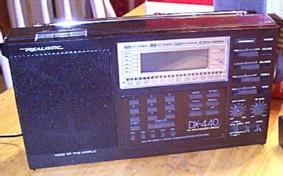

Realistic DX-440 Shortwave Receiver
A portable scanning receiver capable of receiving frequencies from 150
kHz through 30 MHz, in AM, with SSB possible by engaging a beat frequency
oscillator. 9 memory channels. Wide and narrow filters pass 6 and 3 KHz
or so, respectively. Scans in 5 KHz steps in the SW broadcast bands,
9 or 10 KHz in the MW broadcast band, 3 Khz, otherwise. Receives FM
stereo broadcasts in 88 - 108 MHz
A quite useful unit. I take it camping and use it as an alarm clock.